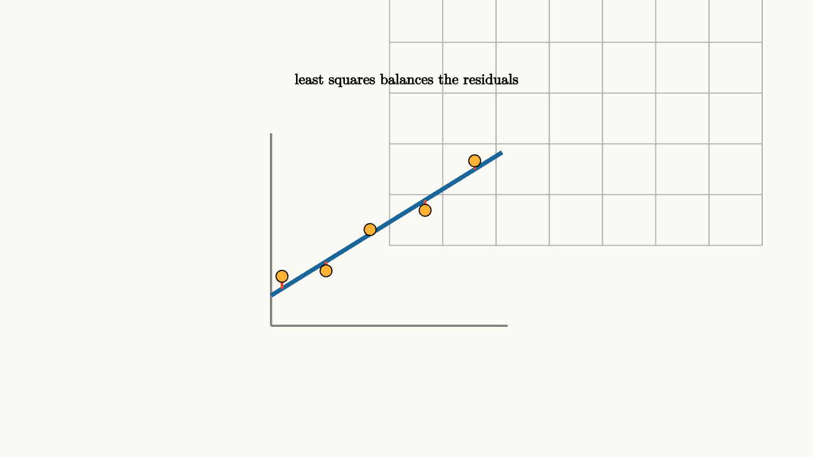

Least Squares Finds the Best Compromise
Real measurements rarely line up perfectly. A spring experiment gives points that almost form a line. A temperature model almost matches the recorded data. A set of equations may have more constraints than unknowns, and small errors make the exact system impossible.
Least squares is the linear algebra of best compromise. Instead of demanding
we choose $x$ so that $Ax$ is as close as possible to $b$.
The error is
Least squares chooses $x$ to minimize
Squaring makes positive and negative errors add as energy, and it gives a smooth quantity to minimize.

source
background = [0.985, 0.98, 0.955, 1]
camera = Camera(4.8b)
let O = [-1.6, -1.15, 0]
let U = 0.65
let P = |x, y| [O[0] + U * x, O[1] + U * y, 0]
let line = |x| 0.62 * x + 0.55
let pts = [[0.2, 0.9], [1.0, 1.0], [1.8, 1.75], [2.8, 2.1], [3.7, 3.0]]
mesh diagram = block {
. stroke{LIGHT_GRAY, 1.1} LineGrid([-0.2, 4.2, 8], [-0.2, 3.4, 7], 1)
. stroke{GRAY, 2} Line(start: P(0, 0), end: P(4.3, 0))
. stroke{GRAY, 2} Line(start: P(0, 0), end: P(0, 3.5))
. stroke{BLUE, 4} Line(start: P(0, line(0)), end: P(4.2, line(4.2)))
for (pt in pts) {
. stroke{RED, 2.5} Line(start: P(pt[0], line(pt[0])), end: P(pt[0], pt[1]))
. fill{ORANGE} center{P(pt[0], pt[1])} Circle(0.07)
}
. center{[0, 1.75, 0]} color{BLACK} Text("least squares balances the residuals", 0.62)
}In column-space language, $Ax$ can only land in the span of the columns of $A$. If $b$ is outside that span, exact solving fails. Least squares projects $b$ onto the column space. The best model output is the shadow of $b$ in the space of outputs the model can produce.
The residual from the projection to $b$ is orthogonal to the column space:
This gives the normal equations:
That equation is the algebraic form of the right-angle condition.
The normal equations can be read one column at a time. If $a_1,\ldots,a_n$ are the columns of $A$, then every possible model output is a combination
At the best fit, the residual $r=b-Ax$ is orthogonal to each adjustable direction:
Stacking those equations gives $A^Tr=0$. This is the same closest-shadow condition from projection, expressed for a whole model space.
source
background = [0.985, 0.98, 0.955, 1]
camera = Camera(4.7b)
let O = [-1.6, -1.05, 0]
let U = 0.66
let P = |x, y| [O[0] + U * x, O[1] + U * y, 0]
let pts = [[0.2, 0.95], [1.0, 1.0], [1.8, 1.72], [2.8, 2.14], [3.7, 3.0]]
let FitScene = |slope, intercept, label| block {
let line = |x| slope * x + intercept
. stroke{LIGHT_GRAY, 1.1} LineGrid([-0.2, 4.2, 8], [-0.2, 3.4, 7], 1)
. stroke{GRAY, 2} Line(start: P(0, 0), end: P(4.3, 0))
. stroke{GRAY, 2} Line(start: P(0, 0), end: P(0, 3.5))
. stroke{BLUE, 4} Line(start: P(0, line(0)), end: P(4.2, line(4.2)))
for (pt in pts) {
. stroke{RED, 2.5} Line(start: P(pt[0], line(pt[0])), end: P(pt[0], pt[1]))
. fill{ORANGE} center{P(pt[0], pt[1])} Circle(0.07)
}
. center{[0, 1.72, 0]} color{BLACK} Text(label, 0.62)
}
"first guess"
mesh scene = FitScene(slope: 0.25, intercept: 1.45, label: "a line can miss every point")
play Write(0.8)
"better compromise"
scene = FitScene(slope: 0.62, intercept: 0.55, label: "least squares chooses the closest model output")
play Lerp(1.2)
"residual view"
scene = block {
. FitScene(slope: 0.62, intercept: 0.55, label: "residuals cannot be improved by moving along model directions")
. center{[0, -1.75, 0]} color{BLACK} Text("A^T(b - Ax) = 0", 0.7)
}
play Fade(0.7)For a line fit
each data point gives an equation:
The unknown vector is
The matrix $A$ has rows
The vector $b$ holds the measured $y_i$ values. Least squares finds the slope and intercept whose predicted values are closest to the data vector.
The phrase "least squares" can sound like a numerical recipe. The geometry is more memorable. The model can only move inside its column space. The data point $b$ may sit outside. The best model output is the closest point in that space. The residual stands perpendicular to every direction the model can adjust.
This also gives a warning. Least squares finds the best compromise inside the chosen model. If the model is wrong, the best compromise can still be misleading. A line can be the best line for curved data while missing the real pattern. The method solves the projection problem exactly; the model choice remains a human responsibility.
The square in least squares has two jobs. First, it punishes large residuals more than small ones. An error of $4$ contributes $16$, while two errors of $2$ contribute $8$ together. Second, it gives a smooth bowl-shaped objective for linear models. That smoothness leads to the normal equations and to efficient algorithms.
In practice, one often avoids solving $A^TAx=A^Tb$ by directly inverting $A^TA$. The matrix $A^TA$ can magnify numerical problems when the columns of $A$ are nearly dependent. More stable methods, such as QR decomposition, build an orthogonal basis for the column space and project using that cleaner frame. The geometry stays the same: find the closest point in the column space. The numerical path is chosen to keep the computation reliable.
A useful check is the residual plot. If residuals show a pattern, the model space is missing an important direction. If residuals look like unstructured noise around zero, the chosen model may be capturing the main linear relationship. Least squares gives the best point in the current space; residuals tell whether the space deserves trust.
This is why linear algebra belongs in data work. It gives a picture of modeling as geometry. Data is a vector. A model is a subspace or curved family. Fitting means finding the closest model output. Least squares is the first version where the picture, the formula, and the computation all line up.